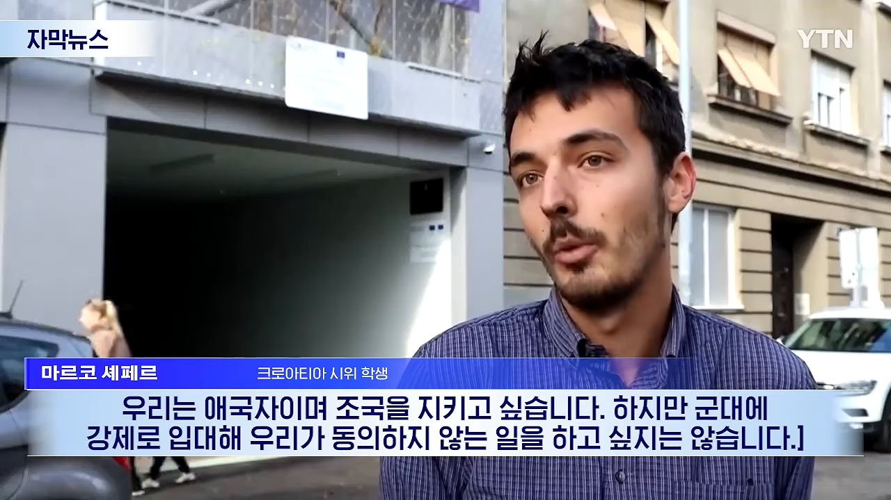

러시아와 국경이 멀수록 군비 축소 요구가 높다고 함

러시아와 국경이 멀수록 군비 축소 요구가 높다고 함
평생 침략만 해와서 무기에 돈 쓰지말란 말을 할 수 있는건가?
맘만 먹으면 어떤 분야든 박사급까지 충분히 독학 가능해진 시대인데 뭔 지들 교육에 돈을 써달래
마인드가 쌀숭이 그 자체
엄?
학교 안다녀봤어?
석사까지는 독학한다쳐도 박사를 어케 독학하노... 박사학위의 핵심은 학습이 아니라 창조임. 내 생각을 논리정연하게 만들어서 다른 사람을 설득시키는 과정임. 그 다른 사람이 지도교수인거고. 물론 천재가 새로운 학설을 만들어서 짜잔 하고 터트리면 박사급으로 인정해주기도 한다만... 독학이 가능한건 아니지. 어쨋든 그 사람도 어떤 방식으로든 학계의 검증이라는 과정을 거치기 때문임.
박사 독학은 천재도 못해 시발
이런새끼들이 뭐만하면 학교가 어쩌구 가정교육이 어쩌구 한다 ㅋㅋㅋㅋㅋㅋ
식민지배할때 쌓은 부와 영향력으로 복지 최대로 뽑으며 살고 영국이랑 미국한테 빨대 꼽고 살다가 이제 그럴 돈이 없어서 그런듯
평화에 찌들어벌인
유럽은 그들의 문제를 스스로 해결할 능력이 없다. 예전에도 그랬고 앞으로도 그럴것.
러시아 공수드랍하면 그냥 개털리겠네ㅋㅋ
지난 30년동안 군비를 축소하고 미국에 안보를 무임승차를 하면서 저런걸 요구한다라
국경이 점점 가까워질텐데 ㅋㅋㅋㅋ
유럽은 가라앉을 것이다
진짜 철없다
사실 우크라도 못넘고있는 러시아보면 전쟁에 별 위협안된다고 생각할만도해 해봤자 발트3국정도만 점령가능할듯
둘 다 최고수준인 미친 나라에 사는데..
그래야 교육받고 튈거아니냐
ㅋㅋㅋㅋㅋ 왠지 아주 익숙하죠? ㅋㅋㅋㅋㅋㅋㅋㅋㅋㅋㅋㅋㅋㅋㅋㅋㅋㅋㅋㅋㅋㅋㅋㅋㅋㅋㅋ
그리고 러시아에 먹혀서 총알받이가 돼겠지
유럽은 그냥 이참에 한 번 개망해야돼
저러면서 우크라이나 지원해야 한다는 지지율도 높더라
너무 모순적이야
지금까지 군비 줄여서 니들 공부 안하고 탱자 탱자 놀았잖아
그거 이제 돌려 받는 중인데 ㅋ
쟤네를 욕할 것만도 아닌게 중장년층 이상 노년층 연금이나 복지는 손 못대고 청년층 교육예산만 줄창 건드리니까. 이게 어른들이 앞서서 본을 보이지는 못할망정.
동아시아 유교문화가 단점도 있지만 이런쪽에서 확실히 나은게 전세대에서 교육에 대한 관심이 높고 권력자가 잘못 건드리는 순간 뒤지기 딱 좋아서. 기독교계 문화는 교육에 배타적인 바탕이 깔려있어서 살짝 엇나가면 교육시스템 조지기에 딱 좋음
이민자 대거 받아들여놓고 저러니 아니꼬운거지
공교육이 무너진 상황에서 취지는 이해하겠는데 지금 유럽 안보도 겁나 위협받고 있는 상황인지라..
와 나도 이거 생각했는데